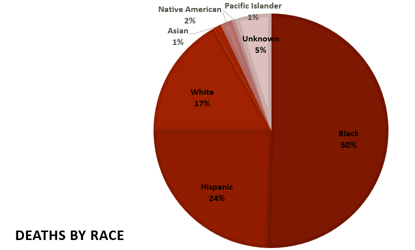

This graph displays the perecentage of police brutality deaths by race. Even though African-Americans and Hispanics are 13 and 18 percent of the US population, respectively, they have the highest percentages of deaths at the hand of the police. Blacks are three times more likely to be killed by the police than whites.

This graph displays the number of deaths for each age. Age 18 had the highest number, with 39 deaths, and age 14 had the lowest with 1 death.

This graph displays the percentage of police brutality deaths by gender. The vast majority of police brutality victims are male.